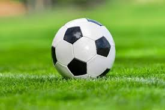
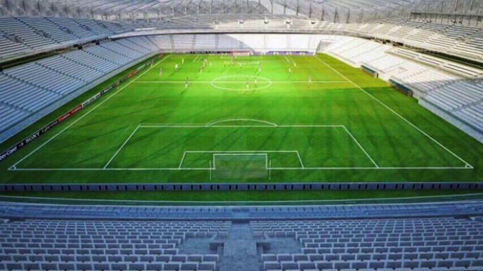
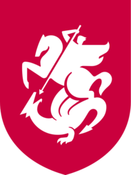
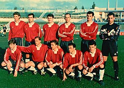
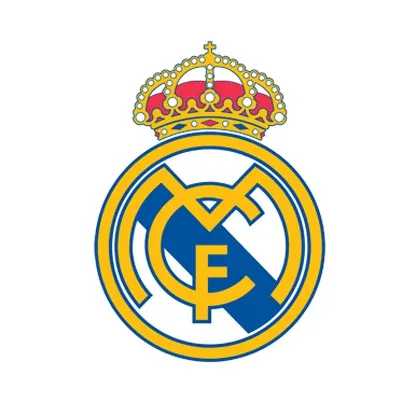
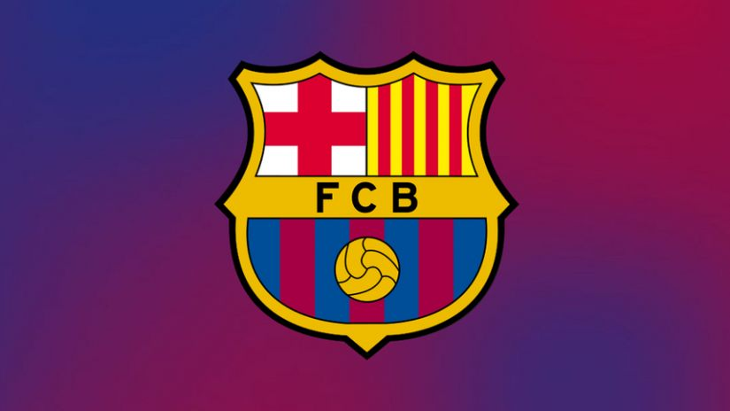
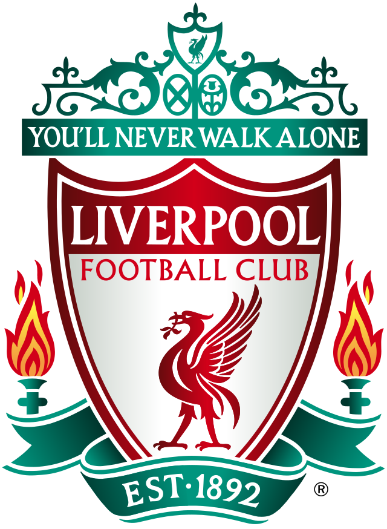

ფეხბურთი ჩემი საყვარელი სპორტია
ფეხბურთი არის გუნდური სპორტი, რომელშიც თერთმეტ წევრისგან შემდგარი ორი გუნდი ეთამაშება ერთმანეთს. თამაში მიმდინარეობს მართკუთხა მინდორზე საგოლე კარით ორივე ბოლოში. თამაშის მიზანი გუნდის წევრებს შორის ბურთით მანევრირებაა მოწინააღმდეგე გუნდის კარში გოლის გასატანად.
სტადიონი — ნაგებობა სპორტული სანახაობებისთვის. უმეტეს შემთხვევაში იგი წარმოდგენილია, როგორც დიდი მოედანი და ადგილი (ტრიბუნები) მაყურებელთათვის.
ბურთის შესახებ ინფორმაცია
აქვს სფეროს ფორმა; დამზადებულია ტყავისაგან ან სხვა ამ მიზნებისათვის შესაფერისი მასალისაგან; მატჩის დაწყების მომენტში ის იწონის არაუმეტეს 450 გრამისა და არანაკლებ 410 გრამისა; მასში ჰაერის წნევა არის 0.6 - 1.1 ატმოსფერო.
ეხლა ვისაუბრებ საქართველოს ეროვნული საფეხბურთო ნაკრების შესახებ
საქართველოს ეროვნული ნაკრების ისტორია 1990 წელს იწყება, მანამდე ქართველი ფეხბურთელები თამაშობდნენ საბჭოთა კავშირის ეროვნულ საფეხბურთო გუნდში.
1991 წლის 2 ივლისს, საქართველოს ნაკრებმა ამხანაგური შეხვედრა გამართა მოლდოვასთან და ანგარიშით 4 2 გაიმარჯვა.
1992 წელს საქართველოს ფეხბურთის ფედერაცია ფიფას და უეფას წევრი გახდა და საქართველომ მიიღო შეჯიბრებებში მონაწილეობის უფლება. პირველი ოფიციალური თამაში იყო ევრო 96-ის შესარჩევ ციკლში, სადაც ქართველი ფეხბურთელები მოლდოვასთან 1 0 დამარცხდნენ
ფეხბურთში არსებობს ბევრი ცნობილი კლუბები როგორებიცაა:real madrid,barcelona,psg,Chelsea,liverpool,man united,man city და ასე შემდეგ.
„რეალი“ არის ყველაზე წარმატებული კლუბი ესპანეთში. ფიფამ დაასახელა მე-20 საუკუნის საუკეთესო კლუბად. კლუბს მოგებული აქვს პრიმერა დივიზიონის სარეკორდო 36 ტიტული; ესპანეთის თასის 20 ტიტული; ესპანეთის სუპერთასის 10 ტიტული; ჩემპიონთა ლიგის სარეკორდო, 15 ტიტული, მათ შორის 3-ჯერ ზედიზედ (ჩემპიონატის მიმდინარე ფორმატის პირობებში) 2016 18 წლებში, რაც ყველა სხვა კლუბისთვის ჯერჯერობით მიუღწეველი შედეგია;
„ბარსელონა“ ერთ-ერთი იყო 1928 წელს ესპანეთის ჩემპიონატის დამაარსებელთა შორის და ბილბაოს „ატლეტიკსა“ და მადრიდის „რეალთან“ ერთად იმ 3 გუნდს წარმოადგენს, რომლებსაც „პრიმერა დივიზიონი“ არასოდეს დაუტოვებიათ. „ბარსა“ გახდა ესპანეთის პირველი ჩემპიონიც. დღეისათვის იგი ესპანეთის ყველაზე ტიტულოვანი კლუბია ოფიციალური ჯილდოების მიხედვით.
1892 წელს დაარსებიდან ერთ წელში კლუბი ხდება ინგლისის საფეხბურთო ლიგის წევრი, არსებობის ისტორიის განმავლობაში ლივერპულის საშინაო არენა ენფილდის სტადიონია. 2019 წლის მონაცემებით ლივერპული მსოფლიოში მეშვიდე ყველაზე შემოსავლიანი კლუბია, წლიურად €604 მილიონი,ხოლო კლუბის ღირებულება $2.183 მილიარდს შეადგენს და საფეხბუთო კლუბების რეიტინგში მერვე ადგილს იკავებს.